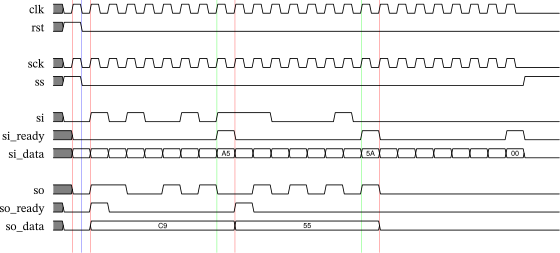

SPI Core 8x1
09 August 2020
SPI Core 8x1 is a set of Verilog modules implementing a Serial Peripherial Interface (SPI) with an 8 bit parallel interface and a 1 bit serial interface.
There is no specific industry standard specification for SPI. This implementation is primarily intended as a slave receiver of 8 bit byte streams driven by microcontroller SPI masters in SPI mode 0.
| Master | Slave | ||
| Signal | Direction | Direction | Description |
| SCK | Output | Input | Clock |
| MISO | Input | Output | Serial IO |
| MOSI | Output | Input | Serial IO |
| SS | Output | Input | Select |
For SPI mode 0, data is sampled on the SCK rising edge (red) and shifted on the SCK trailing edge (blue). Serial transfer data is ignored if SS is not asserted.

| Signal | Direction | Description |
| clk | Input | System clock |
| rst | Input | System reset |
| sck | Input | SPI clock |
| ss | Input | SPI select |
| si | Input | SPI serial input |
| si_ready | Output | SPI input byte ready |
| si_data | Output | SPI input byte data |
| so | Output | SPI serial output |
| so_ready | Output | SPI output byte ready |
| so_data | Input | SPI output byte data |
module spi_core_8x1 (input sck, input ss, input si, input so, output si_ready, output si_data, output so_ready, input so_data, input clk, input rst);